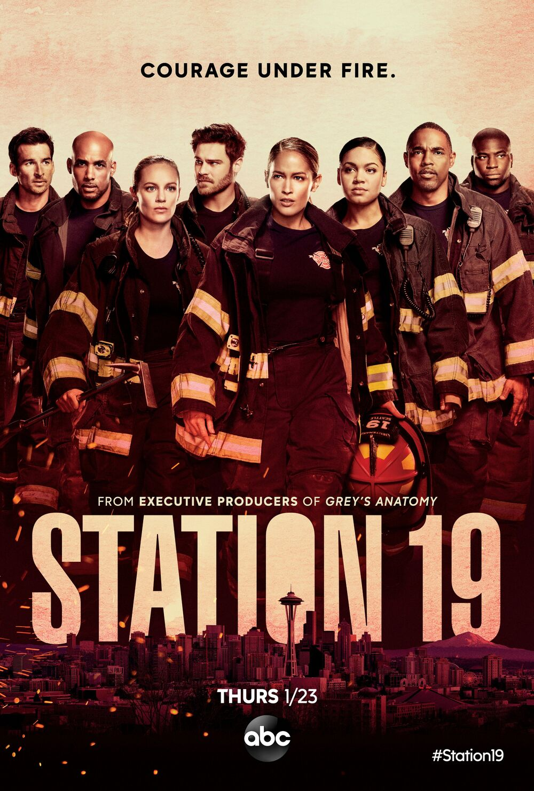
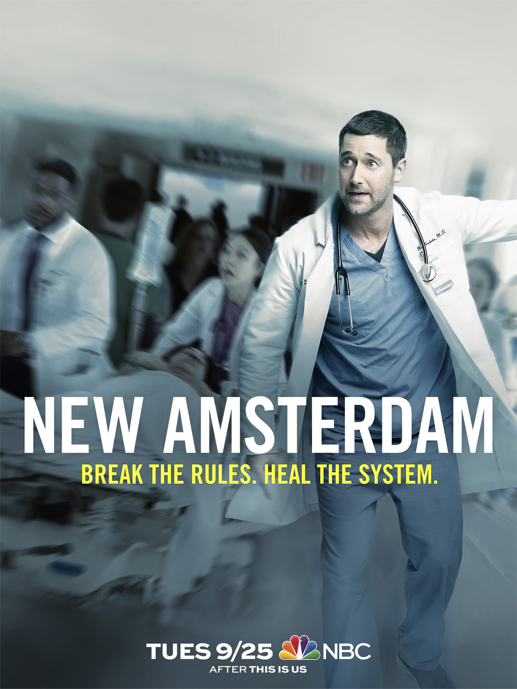

Si te gustó Grey's Anatomy, también vas a disfrutar:
PRIVATE PRACTICE
Se trata de un spin-off de la serie Grey's Anatomy. La serie narra la vida de la doctora Addison Montgomery, interpretada por Kate Walsh tras dejar el hospital Seattle Grace y mudarse a Los Ángeles, donde empieza a trabajar en una clínica privada de unos amigos.
STATION 19
Es la segunda serie derivada de Grey's Anatomy. Ambientada en Seattle, la serie se centra en las vidas de las mujeres y hombres en el departamento de bomberos de Seattle Fire estación 19, desde el capitán hasta el más reciente recluta en sus vidas personales y profesionales.
NEW AMSTERDAM
Max Goodwin, interpretado por Ryan Eggold, ha sido designado como nuevo Director médico del llamado "New Ámsterdam Hospital", el hospital público más antiguo de los Estados Unidos. Desde su llegada, no tardará en tomar decisiones radicales para mejorar la atención.